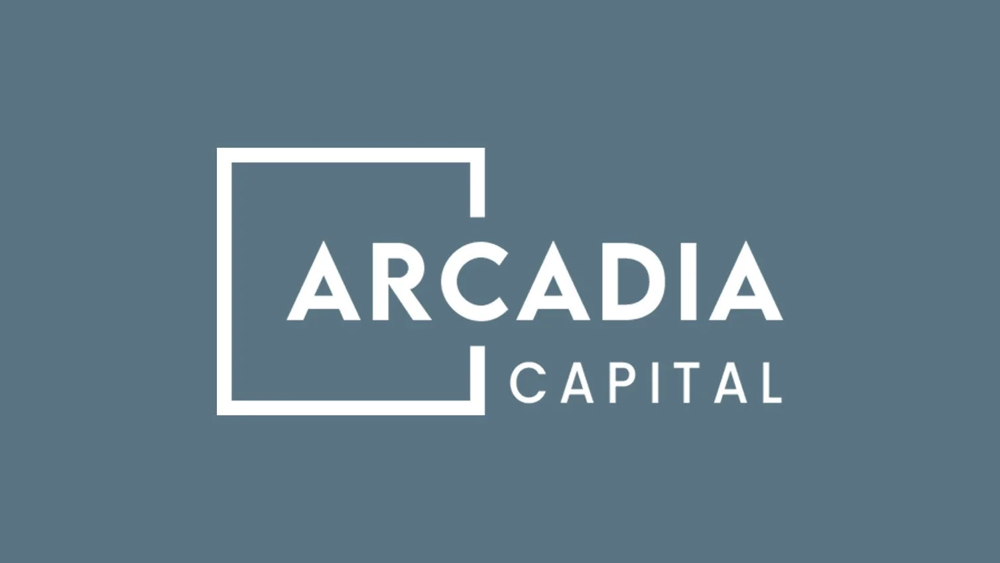

Investment Banking Summer Analyst, ECM TMT Group • New York, New York
Supported execution of the Figma IPO and Mobileye follow-on by drafting ECC memos, analyzing
company financials, and preparing slides; partnered with coverage to assess valuation
drivers
Conducted market and company research using FactSet, AlphaSense, Dealogic, PitchBook, and
RenCap to produce shareholder momentum analyses, peer comps, and market backdrop updates
that informed strategy and client recommendations
Completed summer valuation project, conducting comps and intrinsic analyses to estimate
firm value; presented findings to senior bankers and benchmarked against actual
transaction outcomes
Vertical SaaS
Colmado Technologies
Founder • New York, New York
Building bespoke software infrastructure for B store grocers and bodegas across the NYC
metropolitan area, focused on modernizing fragmented legacy workflows through AI driven
analytics, inventory intelligence, and operational automation
Developing lightweight ERP, POS adjacent, and business intelligence tools tailored to
independently owned retailers, emphasizing ease of use, multilingual functionality, and
practical integration with existing store systems
Conducting direct market validation with operators to identify pain points across inventory
management, procurement, accounting, and sales visibility, translating operational needs
into scalable software solutions
M&A Advisory
Two Roads Advisors
Investment Banking Spring Analyst • New York, NY - Remote
Advised sell-side mandate for decision-intelligence SaaS serving automakers; analyzing a
$7.9M ARR platform mid-transition from professional services to a recurring subscription
model, with durable GRR, customer concentration, sales efficiency, and retention as core
valuation drivers
Executed DCF, and EV/ARR NTM Revenue comps for enterprise software sell-side mandates;
modeled ARR ramp, gross margin expansion, and Rule of 40 trajectories for SaaS and
AI-enabled platforms
Worked across Technology, Industrials, and Healthcare mandates, contributing to
sector-specific valuation analyses, strategic positioning, and buyer identification
processes
Student-Managed Capital
University of Miami SMIF
Analyst, Technology Team • Coral Gables, Florida
Performed comparable company and DCF valuations to assess intrinsic value and transaction
multiples for assigned equities, including analysis on Fabrinet, revenue expansion driven
by growth sustained through telecom components critical to AI infrastructure
Partnered with team to manage $2 million long-only equity and ETF portfolio, presented
findings to faculty and peers to drive real-capital allocation decisions, technology
comprised ~47% of portfolio
Tech M&A Advisory

Arcadia Capital
Investment Banking Fall Analyst, Technology M&A • Miami, Florida
Developed conceptual understanding of SaaS valuation frameworks, analyzing how key metrics
including NRR, GRR, LTV, and LTV/CAC ratios drive software company multiples
Collaborated directly with bankers on live technology M&A transactions, contributed to
valuation analysis, buyer targeting, and preparation of CIMs and investment memos